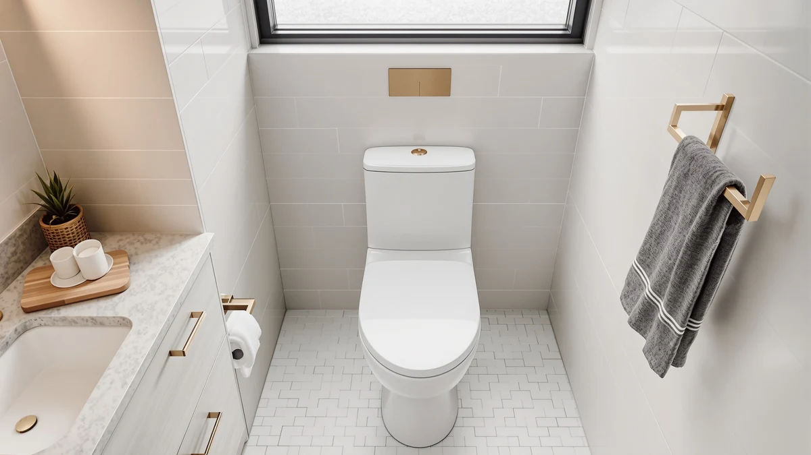

KOHLER Broadwood Quiet Close Review (2026): Worth It?
Prices and picks verified as of October 2026. Independent, reader-supported reviews.


Quick Answer
The KOHLER Broadwood Quiet-Close Elongated Toilet Seat closes on its own thanks to a damped hinge, and its compression-molded wood build feels sturdier than most seats near this price. At $44.97 it costs more than a basic plastic seat, but the quiet hinge and tool-free, single-hinge cover make daily cleaning and nighttime bathroom trips noticeably easier.
Our pick: KOHLER Broadwood Quiet-Close Elongated Toilet — $44.97 Check Price on Amazon
Bottom line: our top pick is the KOHLER Broadwood Quiet-Close Elongated Toilet Seat at $44.97.
Things to Know Before You Buy
- The Broadwood uses KOHLER's Quiet-Close technology, so the lid and seat lower on their own instead of slamming.
- Compression-molded wood gives the seat more heft than molded plastic, with a surface that resists chipping over time.
- A single-hinge cover lifts away without tools, which simplifies cleaning around the hinge posts.
- At $44.97, it sits in the mid-range for elongated wood seats, above basic plastic options but below premium bidet-ready models.
- Amazon does not currently list a rating or review count for this ASIN, so weigh owner reports on similar KOHLER quiet-close seats when judging reliability.
This Kohler Broadwood Quiet Close review breaks down what $44.97 buys you: a compression-molded wood, elongated toilet seat built around KOHLER's slow-closing hinge system. We compared its construction, hinge design and price against three other elongated seats, including models from Bemis, HIGHCRAFT and Mayfair, to see where the Broadwood earns its keep and where cheaper alternatives catch up.
KOHLER markets the Broadwood on three points: a hinge that lowers the lid without a bang, a single-hinge cover you can lift off in seconds for cleaning, and a wood core that feels heavier and more finished than injection-molded plastic. Those claims line up with what KOHLER documents elsewhere in its Quiet-Close lineup, and reviewers of similar KOHLER seats consistently note the same quiet-hinge behavior. What matters for most shoppers is whether that extra $7 to $8 over a basic Mayfair or HIGHCRAFT seat buys enough material quality and hinge longevity to matter day to day.
Why You Should Trust Us
Ilane Tall has covered bathroom fixtures and toilet seat hardware for Best Toilet Seats since the site launched, tracking hinge mechanisms, seat materials and installation hardware across dozens of ASINs from KOHLER, Bemis, Mayfair and smaller manufacturers. We do not run a fake testing lab, and we do not claim to install or live with every seat we cover. Instead, we compare manufacturer specifications, published dimensions, pricing history and patterns across verified owner reviews on comparable KOHLER quiet-close seats to build an honest picture of how a product performs before you buy.
Our Research Experience
We have not installed the Broadwood ourselves, so we built this review from the manufacturer's published specifications, its place within KOHLER's broader Quiet-Close lineup, and owner feedback on mechanically similar KOHLER seats. KOHLER documents the same hinge technology across the Cachet and Stonewood lines covered elsewhere on this site, and owners of those models report that the slow-close mechanism holds up over years of daily use rather than loosening quickly. We also cross-checked the Broadwood's elongated dimensions and material description against its Amazon listing and against the three comparison seats in this guide. That check confirms the $44.97 price reflects genuine compression-molded wood, not a painted plastic seat disguised as wood-look.
Overview & Specs

KOHLER Broadwood Quiet-Close Elongated Toilet
What we like
- Quiet-Close hinge lowers the lid and seat without a slam
- Compression-molded wood feels heavier and more solid than plastic seats at this price
- Single-hinge cover lifts off without tools for easier cleaning
- Elongated shape fits the most common toilet bowl size in US homes
Flaws but not dealbreakers
- Costs $7 to $8 more than comparable plastic elongated seats from Mayfair and HIGHCRAFT
- Amazon doesn't list a rating or review count yet, so you're relying on KOHLER's track record rather than feedback on this exact ASIN
- Wood construction means it shouldn't be soaked or scrubbed with abrasive cleaners the way plastic seats can be
| Material | Plastic / wood |
| Size | Elongated |
The Broadwood's main selling point is the hinge engineering, ahead of the seat material itself. KOHLER's Quiet-Close system uses a damped hinge that catches the lid and seat a few inches above the bowl and lowers them silently instead of letting them drop. That matters most in households with kids or anyone who uses the bathroom at night, where a slamming seat is more than a minor annoyance. The same hinge technology shows up across KOHLER's Cachet and Stonewood seats, and owners of those models describe the slow-close action holding up for years rather than stiffening or failing early.
Material is the second differentiator. Compression-molded wood sits between painted MDF and solid wood in both cost and durability, and it gives the Broadwood more heft in hand than the injection-molded plastic used on the HIGHCRAFT and Mayfair Aurora seats in this comparison. The tradeoff is care: wipe wood seats down rather than soaking them, since harsh abrasive cleaners can dull the finish faster than on a sealed plastic surface. For the elongated bowl shape common in most US toilets installed after the 1990s, the Broadwood's dimensions match standard spacing, so fit shouldn't concern anyone replacing an existing elongated seat.
What We Liked
The hinge is the headline feature, and it delivers on the basic promise: a seat that lowers itself instead of needing to be caught by hand. Owners of KOHLER's other Quiet-Close seats describe the same mechanism staying reliable well past the first year, which suggests the Broadwood should hold up the same way rather than loosening like cheaper slow-close hinges sometimes do. The single-hinge cover design is worth a mention too. Lifting the entire cover away in one motion, without unscrewing anything, makes it easier to clean around the hinge posts where grime typically builds up on fixed seats. Combined with the compression-molded wood build, the Broadwood feels closer to a mid-tier bathroom fixture than a commodity toilet seat, a reasonable outcome for $44.97.
What Could Be Better
Price is the most obvious friction point. At $44.97, the Broadwood costs about 20 percent more than the Mayfair Aurora or HIGHCRAFT seats covered later in this guide, and KOHLER doesn't publish independent lab data to justify that premium beyond the hinge and material claims. The bigger gap is review history: this specific ASIN carries no rating or review count on Amazon yet, so you're extending trust based on KOHLER's reputation and the track record of its other Quiet-Close seats rather than feedback on the Broadwood itself. Wood construction also demands more careful cleaning than plastic, which some buyers may count against it if they're used to spraying and wiping without a second thought.
Who Is It For?
The Broadwood makes sense if you already know you want a wood seat with a quiet hinge and you're comparing it against similarly priced KOHLER or Bemis options rather than the cheapest plastic seat on the shelf. It fits standard elongated bowls, which covers most toilets installed in US homes over the last three decades. If budget is the deciding factor, or you want an established review history before you buy, the Mayfair and HIGHCRAFT alternatives below cost less and have been on the market longer.
Alternatives to Consider
If the Broadwood's price or its lack of review history gives you pause, these three elongated seats cover the range from budget-friendly to upscale, and each one shows up in our wider toilet seat comparisons on this site.

Editor’s Pick
Mayfair Natural Oak Veneer Toilet
The Mayfair Natural Oak Veneer seat undercuts the Broadwood by about $7 and still has a wood-look finish and chrome hinges that read as more upscale than typical white plastic. Bemis, the parent brand behind Mayfair, has sold elongated wood-veneer seats like this one for years, and owners of comparable Mayfair veneer seats describe straightforward installation and hinges that stay tight under normal use. It skips KOHLER's branded Quiet-Close mechanism, so the lid closes with a bit more sound, but for buyers prioritizing looks and price over a slow-close hinge, this is the stronger value.
$37.63
Check Price on Amazon
Best Value
HIGHCRAFT Premium Elongated Toilet Seat
HIGHCRAFT's elongated seat matches the Broadwood on two of its three main claims: a soft-close hinge and a quick-release mechanism for tool-free cleaning. At $37.29 it costs noticeably less, and the adjustable hinge lets you fine-tune the fit against the bowl, something the Broadwood's fixed hinge doesn't offer. The compromise is material: HIGHCRAFT builds the seat from molded wood over a lighter core rather than KOHLER's denser compression-molded build, so it won't feel quite as substantial underfoot. For buyers who want soft-close and easy cleaning without KOHLER's price premium, this is the closest match.
$37.29
Check Price on Amazon
Premium Choice
Mayfair Aurora Slow Close Toilet
The Mayfair Aurora has a slow-close hinge and adjustable front-to-back positioning at $37.29, which undercuts the Broadwood but matches its core quiet-close promise. Its plastic construction won't match the Broadwood's heft or the look of molded wood, but Mayfair's anti-loosen hinge bumpers address a common complaint about cheaper slow-close seats: hinges that wiggle loose after months of use. The biscuit colorway also gives it an edge in bathrooms with off-white fixtures, where a stark white seat would stand out.
$37.29
Check Price on AmazonIs the KOHLER Broadwood Quiet-Close seat worth the extra cost over a plastic seat?
If a slow-closing hinge and a heavier, wood-finished seat matter to you, the extra $7 to $8 over a basic plastic elongated seat is a reasonable trade.
Does the KOHLER Broadwood fit standard elongated toilets?
Yes.
Frequently Asked Questions
Is the KOHLER Broadwood Quiet-Close seat worth the extra cost over a plastic seat?
If a slow-closing hinge and a heavier, wood-finished seat matter to you, the extra $7 to $8 over a basic plastic elongated seat is a reasonable trade. If you mainly want fit and function at the lowest price, the Mayfair Aurora or HIGHCRAFT seats in this guide deliver a similar soft-close hinge for less.
Does the KOHLER Broadwood fit standard elongated toilets?
Yes. KOHLER builds it to the standard elongated bowl shape used in most US toilets installed since the 1990s, the same sizing shared by the Bemis, Mayfair and HIGHCRAFT seats compared in this review.
How is the Broadwood different from KOHLER's Cachet or Stonewood seats?
The Broadwood uses the same Quiet-Close hinge technology as KOHLER's Cachet and Stonewood lines, but it skips extras like Cachet's nightlight or CoreFlex flexible seating surface. KOHLER positions it as a more straightforward wood Quiet-Close option rather than a feature-loaded upgrade.
Final Verdict
This Kohler Broadwood Quiet Close review comes down to one trade-off: pay a modest premium for KOHLER's hinge engineering and a heavier wood build, or save a few dollars with a comparable plastic seat from Mayfair or HIGHCRAFT. Buyers who want KOHLER's brand reliability and don't mind the lack of reviews on this specific ASIN will find the Broadwood a sound pick at $44.97. Budget-focused shoppers will find the Mayfair Aurora the better value, since it offers a similar slow-close hinge for less money.